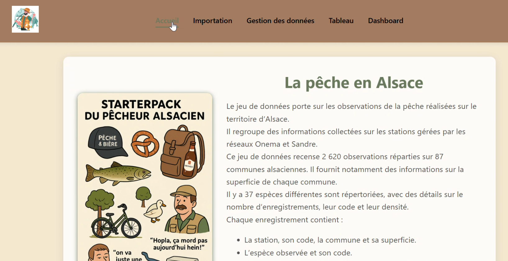
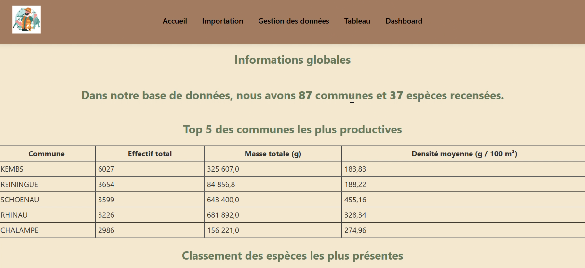
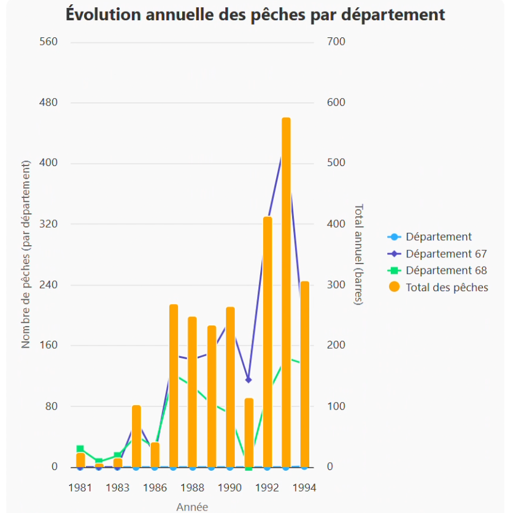
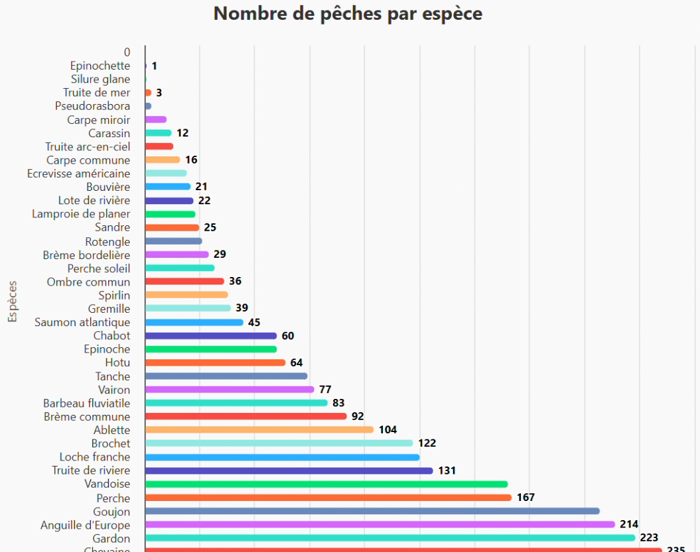

SAÉ 3.01 : Site web dynamique
Contexte
Dans le cadre de cette SAÉ, j'ai développé en binôme une application web dynamique permettant d’exploiter un jeu de données issu de l’OpenData.
Le choix de notre thématique s'est porté sur les données de pêche électrique en Alsace, disponibles sur le site officiel data.gouv.fr.
Ces données scientifiques permettent d’étudier rigoureusement la biodiversité aquatique (espèces de poissons recensées,
densité des populations et cartographie des lieux de prélèvement). Notre objectif principal consistait à concevoir un écosystème capable de stocker, gérer et visualiser ces données environnementales réelles.
Objectifs du projet
Afin de répondre à la problématique, nous devions valider les jalons suivants :
Architecture web
Concevoir une application web complète associant logiques Front-end et processus Back-end.
Modélisation SQL
Mettre en place et administrer une base de données relationnelle robuste (MySQL).
Système CRUD
Permettre une interaction utilisateur sécurisée (ajout, modification, suppression de données).
Méthodologie et déroulement
Le projet a été mené à bien en suivant cinq étapes structurées :
- Exploration complète du dataset initial au format CSV.
- Compréhension et tri des variables clés (espèces, stations, dates, densités, méthodes de prospection).
- Sélection des axes d'études pertinents pour définir notre modèle de données final.
- Réalisation d'un diagramme de cas d’utilisation pour cadrer l'expérience utilisateur.
- Définition des droits et fonctionnalités : consultation de la table, édition des enregistrements, accès au tableau de bord statistique et modules d'importations.
- Conception d'une structure relationnelle propre (création des tables de faits et dimensions : stations, communes, especes, methodes).
- Gestion rigoureuse des intégrités référentielles via l'implémentation de clés étrangères.
- Alimentation de la base de données par scripts d'importation des données brutes OpenData.
- Front-end : Intégration d'une interface utilisateur épurée et responsive en HTML5/CSS3 respectant une charte graphique professionnelle.
- Back-end : Écriture des scripts PHP et requêtes SQL préparées pour assurer dynamiquement la lecture et la mise à jour en base (requêtes SELECT, INSERT, UPDATE, DELETE).
- Développement d’un tableau de bord analytique équipé de plusieurs indicateurs visuels clés.
- Intégration de diagrammes de répartition des espèces et des techniques de pêche.
- Mise en relief de la densité moyenne par zone géographique pour rendre l'analyse directement exploitable.
Technologies déployées
HTML5
CSS3
PHP
MySQL
JavaScript / jQuery
Résultats et livrables
Gestion fluide
- Navigation instantanée au sein du catalogue.
- Mise à jour en temps réel des données scientifiques.
Aide à la décision
- Dashboard synthétique mettant en lumière les espèces de poissons dominantes et les zones actives.




Compétences acquises
Cette situation d'évaluation a consolidé mes compétences techniques en développement full-stack et en ingénierie des bases de données. Elle a également renforcé ma capacité à travailler efficacement en équipe, notamment sur la répartition des tâches, l'intégration continue des fonctionnalités de chacun et la valorisation visuelle de données complexes.